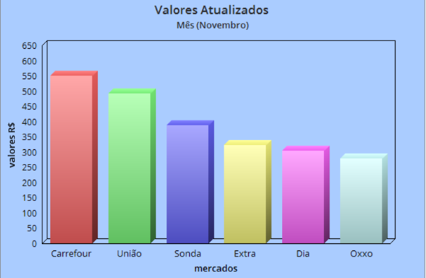

Quem Somos?
A FindLog é uma empresa focada na indústria alimentícia que oferece soluções para a coleta de dados e logística, nosso objetivo é ajudar as empresas do setor alimentício a melhorar sua eficiência e produtividade, fornecendo-lhes as ferramentas necessárias para coletar dados precisos e gerenciar suas operações logísticas de forma eficaz e produtiva.
Como Utilizar Machine Learning na Empresa?
Atualmente, empresas que investem em ML podem obter resultados significantes para seus negócios, sabendo disso a FindLog não ficou para trás e investiu em soluções para melhorar a eficiência operacional, reduzir custos e aumentar a produtividade do seu negócio!!! O (ML) vai ser usado para a análise de grande quantidade de dados para identificar tendências e padrões para tomar as melhores decisões para seu negócio, sabendo também que a segurança é prioridade em nossos serviços nós optamos por utilizar o (ML) para identificar padrões de comportamento fraudulento, o que pode ajudar as empresas a proteger seus sistemas, dados e a reputação do seu negócio.
